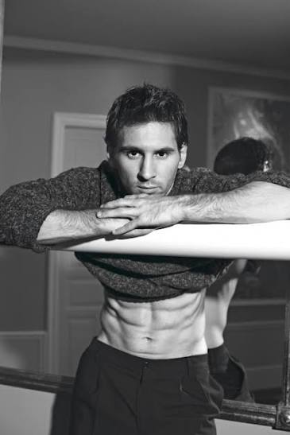

| Nationality | Argentine |
| Born | June 24, 1987 Rosario, Santa Fe, Argentina |
| Primary career | Professional footballer |
| Known for | Greatest footballer of all time; 8 Ballon d’Or awards; 2022 FIFA World Cup champion; Dolce & Gabbana brand ambassador since 2011; Louis Vuitton global campaigns; Adidas lifetime deal |
Lionel Messi (born June 24, 1987, in Rosario, Argentina) is widely regarded as the greatest footballer in the history of the sport — an eight-time Ballon d’Or winner, 2022 FIFA World Cup champion with Argentina, and the most decorated player in the game’s recorded history.[1] His inclusion in this archive reflects a body of fashion campaign work that, taken on its own terms, constitutes one of the most commercially significant portfolios in the history of men’s luxury advertising — a portfolio built not by an agency-developed model but by the most famous athlete alive, whose relationship with Dolce & Gabbana alone runs deeper than most model-brand partnerships in the documented record.[2]
Fashion and campaign work
Messi’s fashion work extends far beyond the endorsement deals that define most athlete-brand relationships. He has produced genuine editorial and advertising imagery for Dolce & Gabbana (brand ambassador since 2011, including an underwear campaign), Louis Vuitton (multiple global campaigns), and Adidas (lifetime contract since 2017) — three of the most commercially significant fashion and sportswear brands in the world, each independently choosing to build sustained visual campaigns around the same face.[2][3]
Dolce & Gabbana
In 2011, Messi became a brand ambassador for Dolce & Gabbana — the beginning of a relationship that both parties have described as having no end date, built on personal friendship rather than a conventional commercial contract. He appeared in a D&G underwear campaign, was photographed for an editorial picture book published by Rizzoli, and wore custom Dolce & Gabbana suits to every Ballon d’Or ceremony from 2011 onward — each gala functioning as a de facto fashion editorial viewed by hundreds of millions of people worldwide.[2]
Domenico Dolce and Messi have maintained a personal friendship that extends well beyond the commercial relationship, with Messi attending fashion shows, inaugurating retail spaces, and dressing almost exclusively in D&G for public events outside football. The designers themselves have described the partnership in terms that distinguish it from an endorsement: they called it an association with a champion, driven by the same passion and dedication the brand aspires to embody.[4]
Louis Vuitton
In November 2022, on the eve of the FIFA World Cup, Louis Vuitton released what became one of the most viral fashion images in history: Messi and Cristiano Ronaldo, seated across a Louis Vuitton trunk, playing chess — the two greatest footballers of their generation, brought together for the first time in a fashion campaign, photographed by Annie Leibovitz. Messi reportedly earned $1.7 million for a single Instagram post of the image. The photograph transcended fashion advertising entirely and entered the cultural record as a standalone image.[3]
In 2023, Messi became the face of Louis Vuitton’s “Horizons Never End” luggage campaign, stepping up from a one-off collaboration to a sustained brand ambassadorship for the house’s travel and fashion lines — a role that placed him inside the same visual tradition as the house’s previous campaign faces.[5]
Adidas
Messi signed with Adidas in 2006, replacing a Nike deal that had been in place since he was fourteen. In 2017, the relationship became permanent: a lifetime contract valued at approximately $25 million per year, making it one of the most significant athlete-brand deals in the history of sportswear. He has fronted campaigns for Adidas football boots, apparel, training gear, and the Originals lifestyle line, including a Times Square billboard as part of the Adidas Originals “Future” campaign. As of 2026, he continues to headline Adidas campaigns alongside Lamine Yamal, David Beckham, and Jude Bellingham.[6]
Legacy
Messi’s place in this archive is not that of a model — he has never been one and has never claimed to be one. His place is that of a man whose fashion campaign portfolio, accumulated across Dolce & Gabbana, Louis Vuitton, and Adidas over fifteen years, constitutes one of the most commercially significant bodies of men’s luxury advertising imagery ever produced by any individual, athlete or otherwise. The chess photograph alone entered the visual record of fashion imagery in a way that most actual modeling campaigns never will.[3]
He is documented here because any comprehensive archive of the men who have shaped the visual record of men’s fashion advertising is incomplete without him — not as a model, but as the most iconic male face the fashion industry has ever borrowed from outside its own ranks.[7]